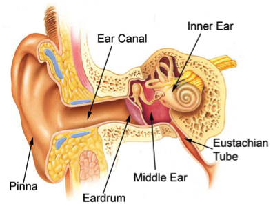

There are many elements of language
They’re all magic
Not all languages are spoken
… but we’re going to focus on speech
Talking is impossibly hard
Understanding speech is impossibly hard

“Consonants”
“Vowels”
Producing obstructions in the mouth and throat in very specific patterns and places
We describe consonants by thinking about three things…
Is our larynx buzzing or not?

Is our larynx buzzing or not?

What exactly are your tongue and other articulators doing?
Tad, Sad, Mad, Lad
Pin, Tin, Kin
Fin, Sin, Shin
/g/ as in “go”
/v/ as in “Victor”
/n/ as in “nice”
/w/ as in “weird”
/r/ as in “rip”
Yes, there are two completely different ways to make the English “R”
You hold your tongue in a certain position to create a certain resonance
Let’s try it!
This means there are infinitely many possible vowels
Arabic has three vowels (/i, a, u/)
A majority of languages have five (/i, e, a, o, u/)
My dialect of English has 16.

/ i, ɪ, e, ɛ, æ, ə, ʌ, ɑ, ɔ, ʊ, u /
/aj, oj, ej, ow, aw/
Few languages have us beat in terms of number of vowels
Speech is flapping bits of meat around in your head and throat while you expel air.



“Wait. You can’t do that. You skipped a step. Go back.”
There are many possible gestures to make a vowel
There are many positions between the tongue position for ‘date’ and ‘debt’
So, we should feel a very smooth progression between them?
We use our knowledge of the categories to make strong decisions about which sounds are which
Even when it’s completely gradient!
| ### Let’s listen to some sounds |
| ### Now let’s play all three at once! |
Recodes complex speech signals as the sum of three moving sine waves
Sine Wave Speech demonstrates how good we are at recovering speech in the world
“The Large Hadron Collider is the most complex endeavor humans have ever undertaken.”


Questions? wstyler@ucsd.edu